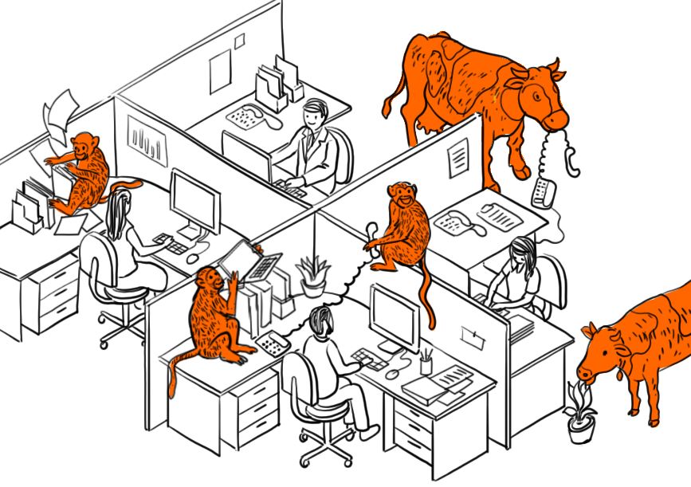

Worried About Unauthorised Access?
When in control of a demanding business premises, the last thing you want to be worried about is unauthorised access on your premises.
Unauthorized access may be gained by an outsider as well as by an in-house employee. Both physical access to a building by a stranger or entry to a server room or some other room with sensitive information by a staff member with no permission are examples of unauthorized physical access.
The most common ways by which an outsider may gain unauthorized access is by:
- Tailgating: when an unauthorized people follow through a door someone who has an access card
- Smart attendance cards which can be easily hacked
- Lost or stolen keys
- Portable devices such as laptops, mobile phones and USB drives
- Unlocked Server Rooms
Because of an unauthorized access, your business may be subjected to physical theft of devices and equipment, compromise of electronic information, identity theft and vandalism. What’s more, human lives can be endangered too.
Therefore, it is vitally important that a company addresses all the existing loopholes is it’s security to prevent possible threats.
The answer is a comprehensive security system which constantly monitors your office space and your employees to ward off all chances of a possible invasion.
What We Provide
1. CCTV Cameras
The first step to setting up any security solution is installing a dedicated system of CCTV cameras across the office premises. Proper placement of the cameras along with constant vigilance of the video feed will ensure no unauthorized person ever steps in to the premises again. The problem of tailgating will cease to exist with a strategically placed CCTV and careful monitoring of it.
2. Fingerprint Access/Biometric Sensors
Another huge problem is identity card theft. Usually identity cards have little to no security which makes them very easy to hack by would-be invaders. Biometric sensors and fingerprint access provides an additional layer of security which cannot be bypassed by a hacker working remotely.
3. Attendance Management System
A reliable Attendance Management System needs to be in place to prevent theft by invaders carrying someone else’s credentials and pretending to be someone else. A proper management system will also take care of the problem of Insider Theft by properly designating server rooms or computers with sensitive information as ‘restricted’ for certain employees.